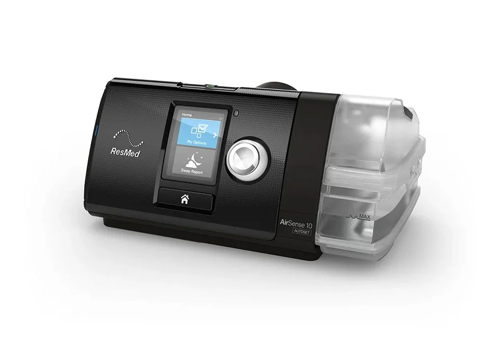

Venda de CPAP e kit CPAP
Aparelhos CPAP, máscaras, traqueias, filtros, acessórios e kits com orientação para escolher a opção mais adequada à sua rotina de tratamento.
Pedir orientaçãoAparelhos, máscaras, acessórios e kits para CPAP com orientação individualizada. Além da venda, a CPAP Minas também oferece higienização, manutenção e acompanhamento técnico.

Venda de CPAP, kits, máscaras e acessórios em BH, com orientação para escolher a melhor solução para sua rotina. Também oferecemos atendimento domiciliar, motoboy, higienização e manutenção.
Falar sobre compra
Com mais de 30 anos de experiência na área de medicina do sono, a CPAP Minas ajuda pacientes de Belo Horizonte a escolherem e cuidarem melhor do equipamento, desde a compra do CPAP e do kit até dúvidas sobre máscara, relatório de uso e funcionamento do aparelho.
O objetivo é simplificar a rotina de quem usa CPAP: você fala com a equipe, entende o melhor caminho para o seu caso e recebe suporte antes, durante e depois da compra.
Estrutura pensada para quem precisa comprar, adaptar, higienizar ou manter o CPAP com praticidade e segurança.
Aparelhos CPAP, máscaras, traqueias, filtros, acessórios e kits com orientação para escolher a opção mais adequada à sua rotina de tratamento.
Pedir orientaçãoLimpeza técnica do equipamento para ajudar a remover acúmulos internos e manter o aparelho em melhores condições de uso.
Saiba maisAvaliação do funcionamento do CPAP, identificação de falhas e orientação sobre o melhor caminho para correção do problema.
Saiba maisAtendimento domiciliar para Belo Horizonte e região, com área de gratuidade definida por limite de km.
Saiba maisMais comodidade para quem prefere enviar o equipamento, com serviço de motoboy para retirada e entrega do CPAP.
Saiba maisAcompanhamento para emissão de relatório de uso e suporte para dúvidas sobre máscara, adaptação e rotina com o aparelho.
Saiba maisO CPAP faz parte da rotina de saúde do paciente. Por isso, a manutenção precisa ser conduzida com atenção, transparência e orientação clara sobre o que está sendo feito.
O atendimento é pensado para reduzir dúvidas, facilitar a manutenção e dar mais segurança ao paciente.
Para quem compra com a CPAP Minas, o suporte continua enquanto a pessoa estiver com o aparelho, incluindo dúvidas sobre uso e rotina.
Mais praticidade para quem não quer se deslocar, com atendimento em domicílio em BH e região dentro da área atendida.
Atendimento na Região Hospitalar, em Santa Efigênia, facilitando o acesso para pacientes e familiares.
Cada pessoa recebe orientação conforme sua necessidade: máscara, relatório de uso, dúvidas sobre CPAP e melhor forma de atendimento.
Explique se precisa de higienização, manutenção, relatório, acessórios ou atendimento em domicílio.
Você recebe orientação inicial e, quando necessário, uma avaliação do equipamento.
Na unidade, em domicílio ou por retirada e entrega com motoboy, conforme sua região e necessidade.
Após o serviço, a equipe segue disponível para dúvidas e orientações relacionadas ao uso do CPAP.
Fale com a CPAP Minas e receba orientação sobre compra de aparelho, kit CPAP, máscaras, acessórios, higienização, manutenção ou atendimento em domicílio.
Não encontrou sua dúvida? Clique aqui para entrar em contato pelo WhatsApp.
Sim. A CPAP Minas vende aparelhos CPAP, kits, máscaras, filtros e acessórios, com orientação para ajudar o paciente a escolher o que faz mais sentido para sua necessidade.
Sim. Há atendimento domiciliar para Belo Horizonte e região, com limite de km para gratuidade. A equipe confirma sua localização pelo WhatsApp.
Sim. O serviço de motoboy pode ser usado para retirada e entrega do equipamento, conforme disponibilidade e região.
Sim. A CPAP Minas acompanha a emissão de relatório de uso sem custo adicional para clientes que compram com a empresa.
A equipe oferece suporte técnico e orientação sobre o aparelho. Ajustes de parâmetros são tratados quando aplicável e conforme necessidade, indicação ou orientação adequada ao caso.
O atendimento fica na Av. Brasil, 283, salas 903/904, Santa Efigênia, na Região Hospitalar de Belo Horizonte.
Preencha os dados abaixo para falar sobre compra de CPAP, kit, acessórios, manutenção ou higienização.